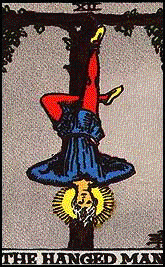

What you need:
- Material to make a poppit
- A small personal belonging of the individual you wish to bind [that can be sewn inside of the poppit]
- A long enough piece of dark blue material or ribbon to bind the poppit like a mummy.
- A nail and a tree to hang the poppit from
- You can use herbs to fill the poppit if the article is not large enough or does not fit the form of the poppit. Adding cloves will act to “still the tongue.” Remember- herbs have no real power of their own, other than medicinal properties. To maximize the power of the herb/s, they must be infused with the elements. *See Important Info About Herbs
Herbs to add can include one or more of the following: - Agrimony
- Asafetida
- Birch
- Bloodroot
- Broom
- Comfrey
- Cypress
- Dragon’s Wort
- Hyssop
- St John’s Wort
- Rue
- Tobacco
- Vervain
- Mullein
All of the above herbs are ruled by the planet Saturn. Saturn is the planet of binding. This ritual is best performed during a full Moon. When you are finished stuffing and sewing the poppit, mark it to represent the person you wish to bind. Draw the individual’s face as best you can- facial hair, if any, glasses- this does not have to be perfect, or paste a photo of the person onto the poppit. Now sew up the mouth with intent. Vibrate ISA into it 108 times.
Click here for the ISA rune information
Place your poppit on your altar and begin a standard ritual. After invoking the Crowned Princes of Hell, state: “I present [name] to be bound. What I do to this image, I do to [name]. Now pick the poppit up and begin winding the material/ribbon around the poppit beginning at the mouth, like a mummy, leaving one leg unbound [so you can hang it]. When finished, place it again on your altar and recite the following: [Name] is bound; he/she is unable to speak against me. [Name] is bound; he/she is unable to act against me. [Name] is bound; he/she is unable to harm me in any way.
Ave Satanas
|  | Close the ritual, now go outside, or if you already are outside- go to a tree where the poppit can be nailed by the unbound foot and hung upside down in the image of the Tarot Card of the Hanged Man.*
This card represents at a standstill, inactivity, one in suspension; one left hanging. Nail the poppit where it will not be disturbed or easily seen. Give thanks to the Powers of Hell and leave the poppit. |
*This step of the ritual [how to hang the poppit], was given to me from Azazel.

BACK TO SATANIC WITCHCRAFT MAIN PAGE
© Copyright 2005, 2015, Joy of Satan Ministries;
Library of Congress Number: 12-16457